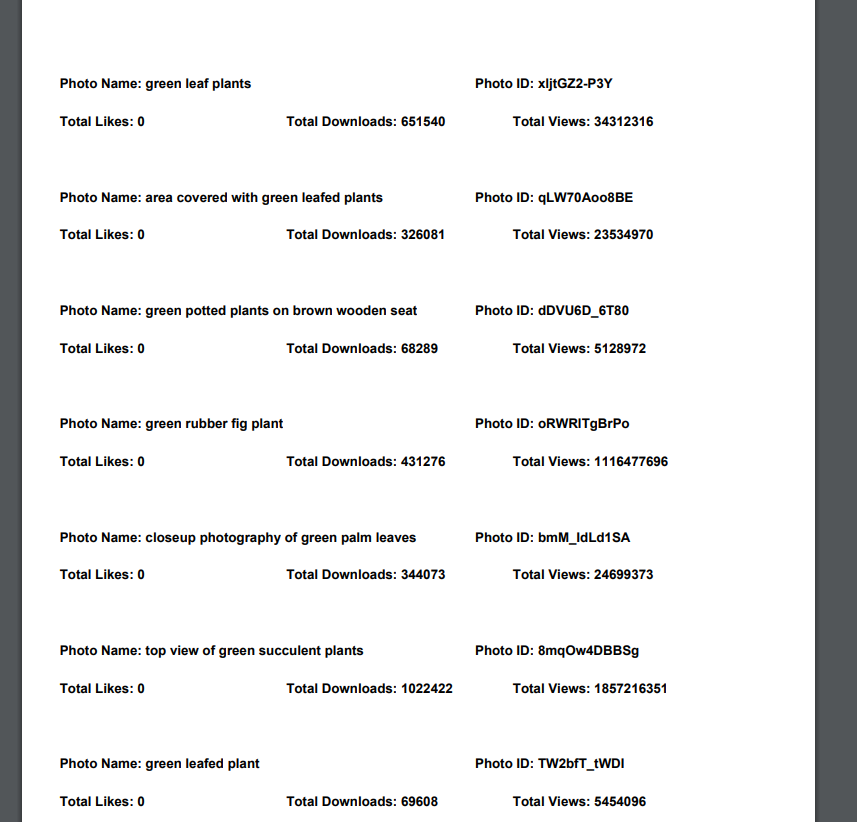
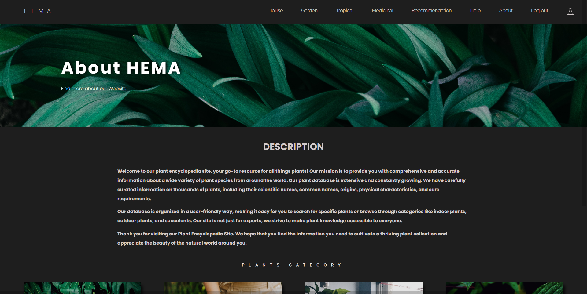
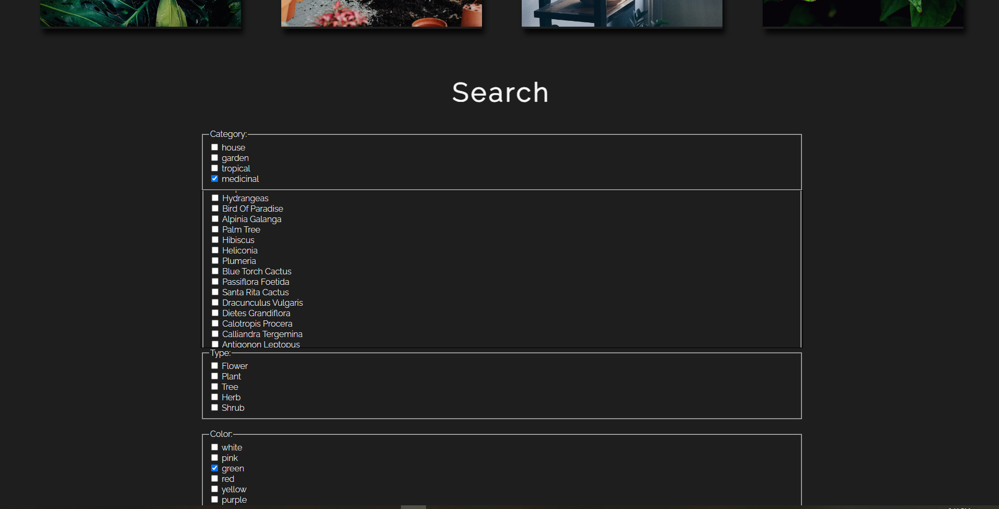

1.3 Scopul proiectului
Scopul acestui proiect este de a oferi utilizatorilor posibilitatea de a-și crea propria colecție de plante, alegând cu grijă preferatele dintr-o varietate de categorii botanice, precum Plante de casă, Plante din grădină, Plante tropicale și Plante medicinale. Prin intermediul unui sistem avansat de selecție și filtrare multi-criterială, utilizatorii pot obține informații detaliate despre diversele plante disponibile.
Descriere
Perspectiva produsului
Cu ajutorul platformei HeMA, utilizatorii beneficiază de posibilitatea de a crea și personaliza propriul cont, oferindu-le o experiență de gestionare avansată a colecției lor de plante. Aceasta implică adăugarea și ștergerea facilă a plantelor preferate. Prin intermediul unui sistem de căutare multi-criterială, utilizatorii pot realiza căutări precise și pot explora plantele în funcție de diverse criterii de selecție. De asemenea, platforma oferă un feed care furnizează recomandări utilizatorilor. În plus, utilizatorii au posibilitatea de a explora un clasament al celor mai populare plante, oferindu-le inspirație și informații despre plantele preferate de alți utilizatori.
Cerinte principale
1.Crearea colectiilor
Utilizatorii pot selecta plantele favorite din diverse categorii de plante: Plante de casa, Plante din gradina, Plante Tropicale si Plante Medicinale. Preferintele se vor afisa in profilul utilizatorului, apasand click pe butonul "Show my Collection". Utilizatorul va putea adauga, respectiv sterge plantele preferate din pagina specifica fiecarei categorii de plante.
2.Cautarea multicriteriala
Sistemul de cautare multi-criteriala se bazeaza pe selectia si filtrarea plantelor dupa: categorie, nume, tip (copac, floare, arbust,ierburi), culoare , conditii si sezon-ul in care aceasta infloreste (iarna, primavara, vara, toamna sau tot inflorita pe tot parcursul anului).
3.Organizarea plantelor
Plantele sunt organizate in functie de categorie: Plante de casa, Plante din gradina, Plante tropicale sau medicinale. Fiecare categorie este asociata cu cate o pagina, unde se afiseaza o lista de plante impreuna cu poze si descriere. De asemenea, fiecare poza are asociata cate un buton unde se pot adauga plante in categorie sau sterge plante din colectia proprie ( click pe butonul in forma de inima ).Descrierea plantelor va aparea printr-o fereastra pop-up atunci cand se da click pe poza plantei.
4.Unsplash - generarea fotografiilor de interes
Cu ajutorul API-ului public Unsplash, putem genera un feed cu recomandari de plante si oferim posibilitatea de a descarca statisticile a plantelor din feed in format PDF si CSV.
5.Clasamentul plantelor populare
Plantele populare sunt determinate în funcție de numărul de salvări în colecțiile utilizatorilor. Clasamentul prezintă cele mai populare 8 plante, ordonate descrescător în funcție de numărul de salvări. Utilizatorii au posibilitatea de a obține informații despre plantele din clasament prin accesarea butonului RSS. Aceasta va genera informațiile sub formă de flux de date RSS, disponibil într-un fișier de tip XML. Astfel, utilizatorii pot fi mereu actualizați cu privire la plantele preferate și pot explora și descoperi noi plante populare în comunitatea noastră.
Autentificare utilizatori
Pentru a utiliza aplicatie, utilizatorii trebuie sa isi creeze cont. Daca deja au facut acest pas, ei doar se vor loga in aplicatie.
Mediu de operare
Aplicatia va putea fi folosita pe dispozitiv: calculator, tableta sau telefon, acesta avand un design responsive ce se adapteaza la orice dimensiune a ecranului. Accesarea aplicatiei va fi facuta prin adresa URL: "localhost:5500/" care va directiona clientul pe pagina de login.
Interfata
HTML
HTML este limbajul de baza folosit pentru crearea paginilor web.Acesta definește structura paginilor și furnizează elementele necesare pentru a prezenta informațiile într-un mod accesibil și ușor de înțeles pentru utilizatorii obișnuiți. Un aspect important este că orice browser modern poate interpreta și afișa codul HTML fără a fi necesare alte aplicații sau programe suplimentare. Astfel, HTML asigură compatibilitatea și accesibilitatea paginilor web într-un mod eficient și universal.
CSS
CSS este limbajul folosit pentru crearea stilului paginilor web. Acesta este responsabil pentru aspectul paginilor.
JavaScript
JavaScript este limbajul de programare utilizat pentru a adăuga funcționalități interactive paginilor web.Un alt aspect esențial al JavaScript este capacitatea sa de a efectua apeluri asincrone către server, permițând încărcarea și actualizarea dinamică a conținutului paginii fără a necesita reîncărcarea completă a acesteia.
Backend: Baza de date
SQLite
Sistemul de gestiune a bazei de date a fost realizata prin intermediul limbajului SQLite. Acesta ofera un set complet de functii pentru gestionarea bazelor de date, inclusiv crearea si gestionarea tabelelorm, interogarilor complexe, actualizari si stergeri de date. Baza de date a aplicatiei HeMA contine 3 tabele, acestea fiind:
1. users : cu campurile aferente ( id, username, email, password, sessionToken).
2. plantAbout: cu campurile aferente: id, category, name, type, color, conditions, season, description
3. collection: cu campurile aferente: id_plant, id_user
Backend: Partea de Server
Node.js
Node.js a fost folosit în principal pentru dezvoltarea aplicației server-side (partea de backend) în contextul dezvoltării web. Limbajul oferă un mediu de execuție JavaScript pe server, ceea ce permite dezvoltatorilor să creeze aplicații web puternice și scalabile.
Paginile aplicatiei
Login

Destinat intrarii in aplicatie. Cand utilizatorul se logheaza, acestuia ii este setat un cookie ce va fi indexat in memoria bazei de date prin intermediul tabelei "users", coloana "sessionToken". In browser, cookie-ul va fi activ 7 zile.
Conditii de utilizare: Utilizatorul isi va introduce usernamul si parola proprie. In cazul in care acesta introduce numele sau parola gresita sau va scrie parola cu majuscule, va aparea un mesaj in pagina care ii va sugera sa isi verifice din nou datele introduse. In caz de succes, acesta va fi redirectionat pe pagina principala.
Register
Autentificarea noilor utilizatori. Acestia isi vor adauga un nume la alegere, email-ul personal si o parola cu care se vor loga ulterior la aplicatie.
Conditii de utilizare: Utilizatorul nu va putea sa introduca un nume sau un email deja existent in baza de date.
HEMA - pagina principala
HOUSE
Plante din casa.
GARDEN
Plante din gradina.
TROPICAL
Plante tropicale.
MEDICINAL
Plante medicinale.
Descrierea unei plante
Recommendation
Recomandari de pe Unsplash
Descarcarea statisticilor in format PDF si CSV
Help
Ajuta userul sa se orienteze in aplicatie
About
Ofera o scurta descriere despre aplicatia web HeMA
Profile
Afisarea propriilor colectii de plante, clasamentul celor mai populare si vizualizarea fisierului XLM care afiseaza informatii despre plantele din clasament.
Afisarea Clasamentului
Afisarea fisierului XLM cu informatii despre plantele din clasament
Adaugare/Stergere in/din colectie
Cautarea multi-criteriala
Afisarea rezultatelor
De exemplu filtrarea plantelor care sunt verzi si mediciale.
Log out
Deconecteaza userul de la aplicatie si stergea cookie-ului.
Arhitectura aplicatiei
Autori
Grupa A5, Anul II, Profesor: Vlad Victor
Calinciuc Laura & Codreanu Robert
Link-uri utile
https://victorvlad19.github.io/web/https://profs.info.uaic.ro/~busaco/teach/courses/web/
https://github.com/CalinciucLaura/TW